הרצאה60 דקות20 שקפים + 4 שקפי גיבוי
מנמ״ר הרשות בעידן ה-AI
מצורך ארגוני לפתרון במהירות שלא הייתה אפשרית בעבר. התפקיד המתרחב של המנמ״ר, ארגז הכלים החדש, שתי הדגמות חיות ומסגרת לתעדוף ולהטמעה בטוחה.

טיוטה לאישור המארגניםהרצאה וסדנה מעשית: איך הופכים צורך ארגוני לפתרון, במהירות שלא הייתה אפשרית בעבר, ומה תפקידו של המנמ״ר בהובלת השינוי.
ההרצאה והסדנה בנויות על אותה מתודולוגיה: חמש שאלות שמובילות מצורך רשותי לערך ארגוני שאפשר למדוד. הטכנולוגיה נכנסת רק בתחנה הרביעית.
מה אנחנו רוצים לשפר?
איך העבודה מתבצעת היום?
איזה מידע נדרש?
מהי דרך הפתרון המתאימה?
איך נמדוד הצלחה?
שתי המצגות אינטראקטיביות ומוצגות בדפדפן בדיוק כפי שיוצגו בכנס. מומלץ לצפות במחשב, במסך מלא.
מצורך ארגוני לפתרון במהירות שלא הייתה אפשרית בעבר. התפקיד המתרחב של המנמ״ר, ארגז הכלים החדש, שתי הדגמות חיות ומסגרת לתעדוף ולהטמעה בטוחה.
נזהה צורך, נבין את התהליך, נבחר גישת פתרון, נבנה כלי ראשוני ונתכנן את הצעד הבא. המצגת משמשת גם את המשתתפים: פרומפטים להעתקה, טיימרים ומצב קריאה בטלפון.
ניווט במצגות (מחשב):
מהשאלה "איזו מערכת צריך?" לשאלה "מה הדרך הנכונה והמהירה ביותר לתת מענה לצורך?". חמישה חלקים, שתי הדגמות חיות, וסיום בצעדים מעשיים ליום שאחרי הכנס.
הסדנה בנויה על עבודה מעשית: הדגמה קצרה, ואז כל משתתף עובד בעצמו. כל אחד עובד בקצב שלו, מהמחשב או מהטלפון, באותה שיחת AI לאורך כל הסדנה.
| שלב | דקות | שקפים | מה קורה | התוצר |
|---|---|---|---|---|
| פתיחה והכנה | 0–22 | 1–4 | מטרת הסדנה, הכנת כלי AI, שלושה כללי עבודה (מידע, אמינות, אחריות) ובחירת אתגר: צורך מהרשות או מקרה מוכן. | כלי פתוח ואתגר נבחר |
| אבחון הצורך | 22–40 | 5–6 | תרגיל 1: ה-AI מנתח את התהליך ושואל שאלות השלמה, בלי להציע עדיין פתרון. בדיקה משותפת מול רשימה. | אפיון ראשוני והגדרת בעיה |
| הזדמנויות ובחירה | 40–63 | 7–9 | תרגיל 2: מפת הזדמנויות שמשווה בין חמש דרכי פתרון. חמש שאלות לפני בחירה. מה נחשב פתרון ראשוני. | מפת הזדמנויות ופתרון נבחר |
| בנייה ובדיקה | 63–82 | 10–11 | תרגיל 3: בניית כלי עבודה חוזר (תפקיד, קלט, פעולה, פלט, בקרה), הפעלה על מקרה לדוגמה, זיהוי פער ושיפור. | כלי ראשוני שנבדק ושופר |
| פיילוט וסיכום | 82–90 | 12–13 | תוכנית פיילוט ל-30 יום, ושלוש משימות לשבוע שאחרי הכנס. | תוכנית פיילוט ל-30 יום |
המסלול המרכזי אינו דורש חשבון בתשלום, כתיבת קוד, העלאת מסמכים או חיבור למערכות הרשות. מי שאין לו גישה לכלי AI עובד עם משתתף סמוך.
מתחילים עובדים עם הפרומפטים הקצרים ומקרה שפ״ע. מתקדמים בודקים מקרי קצה, הופכים את הכלי לעוזר קבוע או בונים אב־טיפוס על נתונים סינתטיים.
לכל פרומפט כפתור העתקה, וקישור חזרה לתרגיל.
התוכן נבנה כך שיהיה מדויק, אחראי ומתאים לסביבה רשותית.
כל הקבצים, הרשויות והאנשים בהדגמות ובתרגילים בדויים. אין שימוש במידע של רשות אמיתית.
הפרומפטים מחייבים הפרדה בין ממצאים מחושבים, פרשנות אפשרית והמלצות לבדיקה, ואוסרים על המצאת מספרים, תקציבים או זמני חיסכון.
הבחנה בין תוכנית, פיילוט ופתרון שהוטמע. ה-AI אינו מוצג כתחליף גורף ל-BI או למערכות ארגוניות.
סביבה, מדיניות ועובדים פועלים יחד. סביבת AI מוגנת אינה מתקנת אוטומטית הרשאות מידע שגויות.
ה-AI מסייע לאפיין ולהציע. תוצרים נבדקים, ואינם מוצגים כפתרון ארגוני מאושר או מוכן לפריסה.
לכל הדגמה חיה שקפי גיבוי עם תוצאה שנבדקה מראש, כך שההרצאה אינה תלויה בחיבור או בכלי.
הקבצים שמשמשים בהדגמות ובסדנה. כולם סינתטיים ונבנו במכוון עם בעיות איכות, מידע חסר וסתירות, כדי להראות איך בודקים תוצרי AI.
הדגמה ראשונה בהרצאה · 628 פניות, 14 שדות, ינואר–יוני 2026, ארבעה אזורים
הדגמה שנייה בהרצאה, ורקע מורחב למשתתפים מתקדמים בסדנה
קלט לבדיקת "עוזר להכנת דוח סטטוס אגפי" בתרגיל 3 · כולל מידע חסר וסתירה מכוונת
כמה נקודות שבהן נדרש מידע או סיוע מצד הכנס, כדי שההרצאה והסדנה ירוצו בצורה חלקה.
שקף 5 בהרצאה מציג את מפת האתגרים של המשתתפים: תחומי פעילות, קשיים נפוצים, חסמים ודוגמאות אנונימיות, כולל מספר המשיבים. עד לקבלת התוצאות מוצגים בשקף מצייני מקום, ולא יוצגו נתונים שלא התקבלו מהסקר.
המשתתפים מעתיקים פרומפטים מהמכשיר שלהם, ולכן חשוב שהקישור יהיה זמין באפליקציית הכנס לפני תחילת הסדנה. הקישור כבר פעיל, וקוד QR אליו מוצג בשקפים 2 ו-13: practiai.co.il/mnmr-2026/workshop.html
המשתתפים עובדים מהמחשב או מהטלפון שלהם מול כלי AI, ולכן נדרשת רשת יציבה שתומכת בכל הנוכחים בו זמנית.
מסך במבנה 16:9, חיבור למחשב המרצה ואינטרנט יציב להדגמות החיות. לכל הדגמה קיים גיבוי חזותי, למקרה של תקלה.
כמה עותקים של נספח 1 (אגף שפ״ע) למשתתפים שיתקשו לקרוא מהטלפון.